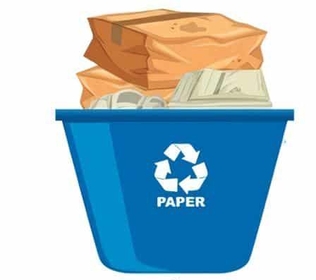
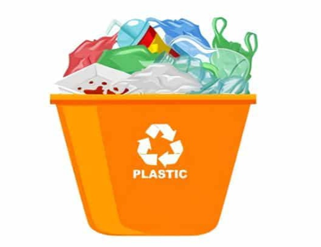

Te explicaremos como es la cadena del reciclaje, desde que los envases domesticos se ponen en el mercado hasta que llegan a las plantas de reciclaje Veras, ademas, de que forma este proceso contribuye a impulsar la economia circular.
Separar bien es la clave para que todo el proceso de reciclaje funcione. Te ayudaremos a resolver tus dudas acerca de donde desitar cada residuo para que siempre tengas claro cual es el contenedor correcto
Tu trabajo sera hacer lo que dice la tabla durante un mes, para que lo implementes en tu vida diaria.
|  | Tu Misión de Hoy |
 | |||
| Lunes | Martes | Miercoles | Jueves | Viernes | Sabado |
| Día 1: Investigar sobre la importancia del reciclado | Día 2: Reducir el uso de platicos de un solo uso | Día 3: Separa y clasifica residuos en casa | Día 4: Visita la playa y recolecta las botellas de vidrio que encuentres | Día 5: Recolecta latas que encuentres en la orilla de la carretera | Día 6: Ve al bosque y recoje Botellas de plastico |
| Día 7: Utiliza los residuos organicos para hacer composta y dejala reposar un día | Día 8: Utiliza carton para crear manualidades | Día 9: Ve a algún parque y utiliza la composta en las plantas que veas | Día 10: Utiliza bolsas, botellas de plastico para crear macetas | Día 11: Ve a un estacionaiento y recoje la basura que encuentres | Día 12: Utiliza las macetas que creaste y colale cualquier tipo de semilla |
| Día 13: Tu misión de hoy es hacer lo mismo de el día 9 | Día 14: Reutiliza hojas al imprimir o hacer algun trabajo | Día 15: Recolecta bolsas de plastico que veas en algun río, cuneta o lago | Día 16: Ve a una tienda de abarrotes y recoje el carton que encuentres | Día 17: Comparte información sobre reciclaje en redes sociales | Día 18: Visita un centro de reciclaje cercano |
| Dia 19: Reducir el desperdisio de alimentos | Dia 20: Investigar sobre la economia circular | Dia 21: Participar en un taller de reciclaje o sostenible | Dia 22: Realizar manualidades con material recicclado | Dia 23: Plantar un arbol o planta en tu hogar | Dia 24: Realiza lo que hiciste el dia 1 |
| Dia 25: Organizar un punto de recoleccion de reciclaje | Dia 26: Reducir el desperdisio de alimentos | Dia 27: Investigar sobre proyectos de reciclaje en tu comunidad | Dia 28: Reducir el consumo de energia en casa | Dia 29: Practicar una limpiexa comunitaria | Dia 30: Invitar a que mas personas se sumen a nuestro proyecto |